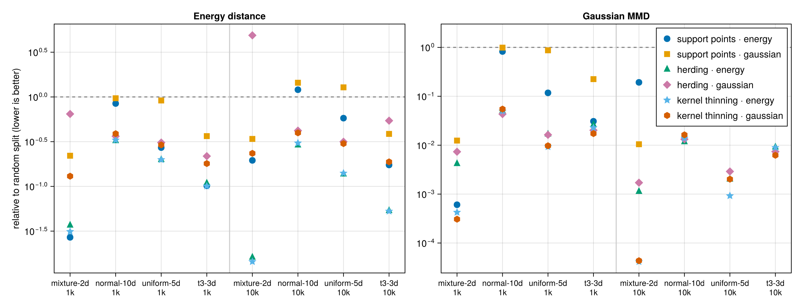
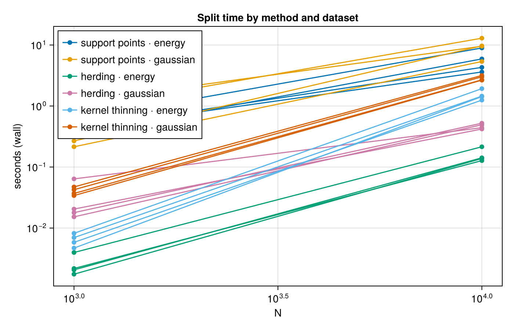
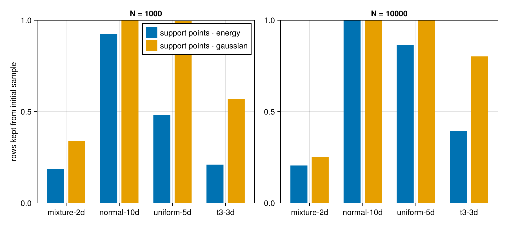
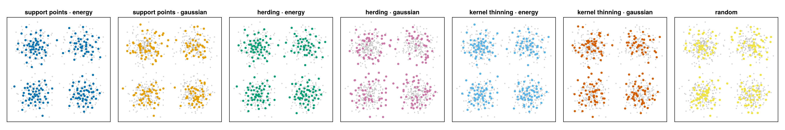
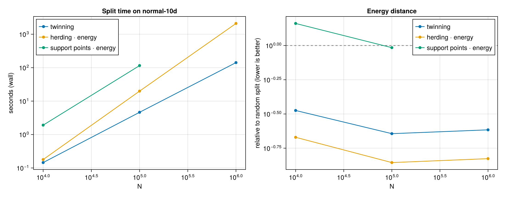

Benchmarks
Use herding · energy by default; use kernel thinning when maximum mean discrepancy (MMD) is the criterion. On four synthetic datasets at N = 1,000 and 10,000 (notation as on the Methods page) herding · energy has the lowest energy distance in 4 of 8 cases and kernel thinning · energy in 3, and the two stay within 0.85-1.06x of each other everywhere; on Gaussian MMD kernel thinning wins 6 of 8. Herding is also the fastest optimized method in every cell, 26-100x faster than the support-point optimizer, 8.6-11x faster than kernel thinning · energy, and up to 23x faster than kernel thinning · gaussian at N = 10,000. Sections 1 and 2 are the evidence; section 3 is why support points fall behind. The setup is under How it was run. Section 4 shows where twinning fits at N up to 10⁶.
1. Quality: herding · energy and kernel thinning share the wins

Each marker is one method on one (dataset, N) cell. The y axis is that method's discrepancy divided by the random split's, so 1 means no better than random and lower is better. Left: energy distance, the quantity the three energy methods minimize. Right: Gaussian MMD, the quantity the three gaussian methods minimize.
herding · energyhas the lowest energy distance in 4 of 8 cells andkernel thinning · energyin 3;support points · energytakes the remaining one (mixture-2dat N = 1,000). The two leaders are close everywhere:kernel thinning · energyis between 0.85x and 1.06x ofherding · energyin every cell.- On MMD, kernel thinning wins 6 of 8 cells: the Gaussian kernel on
mixture-2dandt3-3dat N = 1,000 andt3-3dat N = 10,000, the energy kernel onuniform-5dat both N andmixture-2dat N = 10,000. Herding takes the twonormal-10dcells. support points · gaussianis no better than random onnormal-10danduniform-5dat either N, andsupport points · energyonnormal-10dat N = 10,000. Section 3 explains why.herding · gaussianis 4.9x worse than random on themixture-2denergy distance at N = 10,000. A method only controls the metric it optimizes, so pick the kernel that matches how you will judge the split.
| dataset | N | lowest energy distance | lowest MMD |
|---|---|---|---|
| mixture-2d | 1000 | support points · energy | kernel thinning · gaussian |
| normal-10d | 1000 | herding · energy | herding · gaussian |
| uniform-5d | 1000 | herding · energy | kernel thinning · energy |
| t3-3d | 1000 | kernel thinning · energy | kernel thinning · gaussian |
| mixture-2d | 10000 | kernel thinning · energy | kernel thinning · energy |
| normal-10d | 10000 | herding · energy | herding · energy |
| uniform-5d | 10000 | herding · energy | kernel thinning · energy |
| t3-3d | 10000 | kernel thinning · energy | kernel thinning · gaussian |
Every cell's fastest optimized method is herding · energy. All numbers: assets/benchmarks/results.md.
2. Speed: herding is 26-100x faster than support points

Wall time against N, log-log, just-in-time (JIT) compilation warm-up excluded; the random split is not shown because it does no work. At N = 10,000 herding · energy takes 0.13-0.21 s and herding · gaussian 0.42-0.52 s; kernel thinning · energy takes 1.2-1.9 s and kernel thinning · gaussian 2.7-3.2 s. The two support-point methods take 3.6-8.9 s and 5.4-13.0 s, 26-100x the herding · energy time. Herding's cost is one O(N²) pass for the data term plus O(nN) for the selections, with no iterations, step sizes or kappa to tune. Kernel thinning is in the same class: the same O(N²) data-term pass, plus O(L²) kernel evaluations for the halvings and an O(nN) swap pass (Kernel thinning).
3. Why support points fall behind on normal-10d and uniform-5d

SupportPointSplitter optimizes continuous points, then rounds each one to its nearest unclaimed data row. The points start at a random sample of rows. If the optimizer moves a point less than the spacing between rows, it rounds back to its own starting row. When that happens to every point, the split is the initial random sample and the optimization is discarded.
The figure shows the fraction of starting rows each method keeps. On normal-10d and uniform-5d at N = 10,000 it is 87-100%. On normal-10d the median move is 0.14 (standardized units) against a row spacing of 1.37.
The optimizer is not the problem. Its continuous points reach an MMD of 2.3e-6 to the data, the same level as herding · gaussian. The rounding step throws that away. Starting the points away from data rows does not help (12-18x worse than random on normal-10d). Herding selects rows directly and has no rounding step. Details: benchmark/rounding.jl and assets/benchmarks/rounding.md.
What each method picks

The 2-D mixture at N = 1,000, one panel per method: the six optimized methods and the random split. Herding, support points and kernel thinning all spread the test rows over the four components in proportion; the random split leaves gaps and clumps. support points · energy wins this cell, so the picture shows what a good selection looks like, not a difference between the families.
4. Twinning at scale

Twinning finishes in 0.15 s at N = 10,000, 4.6 s at N = 100,000, and 140 s at N = 1,000,000, 4.3x faster than herding at 10⁵ and 15x faster at 10⁶, and 26x faster than support points at 10⁵. Its energy distance is 3.0x, 4.4x, and 4.1x below the random split at those three sizes, though herding's is lower still, by a steady 1.6x at every N. Twinning is faster from N = 10⁴ on, by a widening margin at 10⁵ and 10⁶; keep herding for the best energy distance while its O(N²) pass stays affordable. Support points stop at N = 10⁵ because the majorization-minimization (MM) repulsion term is quadratic in the selected count; herding runs a single O(N²) pass. Twinning is serial. Numbers: assets/benchmarks/twinning.md; the nearest-neighbor structure was chosen on the Design experiments page, which also reports twinning's time at p = 768.
How it was run
| dataset | distribution | dimensions |
|---|---|---|
| mixture-2d | Gaussian mixture, 4 components | 2 |
| normal-10d | standard normal | 10 |
| uniform-5d | uniform on $[0, 1]^5$ | 5 |
| t3-3d | Student-$t$, 3 degrees of freedom (heavy-tailed) | 3 |
| method | splitter | N = 1,000 | N = 10,000 |
|---|---|---|---|
| support points · energy | SupportPointSplitter(EnergyKernel()) | kappa = nothing (full data) | kappa = 1_000 |
| support points · gaussian | SupportPointSplitter(GaussianKernel()) | max_iterations = 200 | max_iterations = 100 |
| herding · energy | HerdingSplitter(EnergyKernel()) | exact data term | exact data term |
| herding · gaussian | HerdingSplitter(GaussianKernel()) | exact data term | exact data term |
| kernel thinning · energy | KernelThinningSplitter(EnergyKernel()) | delta = 0.5 | delta = 0.5 |
| kernel thinning · gaussian | KernelThinningSplitter(GaussianKernel()) | delta = 0.5 | delta = 0.5 |
| random | uniform random split | mean of 5 seeds | mean of 5 seeds |
| twinning | TwinningSplitter() | start = :farthest | start = :farthest |
- Every dataset is seeded and split with
ratio = 0.2. Scores are the energy distance and Gaussian MMD between the train and test rows. The MMD bandwidth is the median heuristic, resolved once per dataset. Both are computed exactly (splitquality(...; exact_threshold = typemax(Int))). - Each splitter's JIT warm-up runs on a throwaway copy with its own rng, so compilation never consumes the timed splitter's random draws.
- Command:
julia -t auto --project=benchmark benchmark/run.jl. Recorded on Julia 1.10.12, 16 threads (-t auto), AMD Ryzen 7 7800X3D. - Section 4 uses
normal-10dat N = 10⁴, 10⁵, 10⁶ withjulia -t auto --project=benchmark benchmark/twinning.jl; scores above 20,000 rows usesplitquality's automatic estimator with a fixed rng, the same for every method.
The measurements that fixed splitquality's automatic estimator and herding's exact data term are on the Design experiments page.